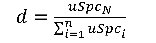
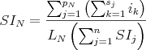
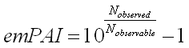
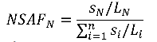
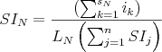

crux spectral-counts
Usage:
crux spectral-counts [options] <input
PSMs>
Description:
Given a collection of scored PSMs, produce a list of proteins or peptides ranked by a quantification score. Spectral-counts supports four types of quantification: Normalized Spectral Abundance Factor (NSAF), Distributed Normalized Spectral Abundance (dNSAF), Normalized Spectral Index (SIN) and Exponentially Modified Protein Abundance Index (emPAI). The NSAF method is from publication by Paoletti et al. (2006). The dNSAF method is from Zhang et al. (2010). The SIN method is from the Griffin et al. (2010) paper. The emPAI method was first described in Ishihama et al (2005). The quantification methods are defined below:
Protein Quantification
For each protein in a given database, the NSAF score is:
where:
- N is protein index
- SN is the number of peptide spectra matched to the protein
- LN is the length of protein N
- n is the total number of proteins in the input database
For each protein in a given database, the dNSAF score is:
where:
- N is the protein index
- uSpcN is the unique number spectra matched to the protein index
- sSpcN is the shared number peptide spectra matched to the protein index
- LN is the length of protein N
- n is the total number of proteins in the input database
- d is the distribution factor of peptide K to protein N, given by

For each protein in a given database, the SIN score is:

where:
- N is protein index
- pn is the number of unique peptides in protein N
- sj is the number of spectra assigned to peptide j
- ik is the total fragment ion intensity of spectrum k
- LN is the length of protein N
For each protein in a given database, the emPAI score is:

where:
- Nobserved is the number of experimentally observed peptides with scores above a specified threshold.
- Nobervable is the calculated number of observable peptides for the protein given the search constraints.
Peptide Quantification
For each peptide in a given database, the NSAF score is:

where:
- N is the peptide index
- SN is the number spectra matched to peptide N
- LN is the length of peptide N
- n is the total number of peptides in the input database
For each peptide in a given database, the SIN score is:

where:
- N is the peptide index
- sN is the number of spectra assigned to peptide N
- ik is the total fragment ion intensity of spectrum k
- LN is the length of peptide N


Input:
-
<input PSMs>– A PSM file in either tab delimited text format (as produced bypercolator,qrankerorbarista) or pepXML format.
-
spectral-counts.target.txt: a tab-delimited text file containing the protein IDs and their corresponding scores, in sorted order. spectral-counts.log.txt: All messages written to standard error.
The program writes one file to the folder crux-output by
default. The name of the output folder can be set by the user using
the --output-dir option. The following files will be
created:
--protein-database <string>– The name of the file in fasta format. In order to calculate NSAF, dNSAF, or SIN, the protein database is needed. The database of protein may be provided in the mzIdentML (.mzid) file.-
--measure <RAW|NSAF|dNSAF|SIN|EMPAI>– Type of analysis to make on match results: (RAW | NSAF | dNSAF | SIN | EMPAI). With exception of the RAW metric, the database of sequences need to be provided using--protein-database. Default = NSAF. -
--quant-level <protein|peptide>– Quantification at protein or peptide level. Methods described under Description. Default = protein. -
--parsimony <none|simple|greedy>– Perform a parsimony analysis on the proteins, and report a "parsimony rank" column in the output file. This column contains integers indicating the protein's rank in a list sorted by spectral counts. If the parsimony analysis results in two proteins being merged, then their parsimony rank is the same. In such a case, the rank is assigned based on the largest spectral count of any protein in the merged meta-protein. The "simple" parsimony algorithm only merges two proteins A and B if the peptides identified in protein A are the same as or a subset of the peptides identified in protein B. The "greedy" parsimony algorithm does additional merging, using the peptide q-values to greedily assign each peptide to a single protein. Default = none. -
--threshold-type <none|qvalue|custom>– Determines what type of threshold to use when filtering matches. none : read all matches, qvalue : use calculated q-value from percolator or q-ranker, custom : use--custom-threshold-nameand--custom-threshold-minto define the threshold. Default=qvalue. -
--threshold <double>– Only consider PSMs with a threshold value. By default, a q-value from percolator, q-ranker, or decoy q-value (xcorr) is thresholded by below or equal to the threshold value. This behavior can be changed using the--custom-thresholdand--threshold-minparameters. Default = 0.01. -
--custom-threshold-name <string>– Specify which match field to threshold the PSMs. By default, the threshold filters by q-value. Setting this parameter will specify a different threshold field to use. The direction of the threshold (>= or <=) is governed by--custom-threshold-min. Default=NULL. -
--custom-threshold-min <T|F>– When selecting matches with a custom threshold,custom-threshold-mindetermines whether to filter matches withcustom-threshold-namevalues that are greater-than or equal (F) or less-than or equal (T) than thethreshold. Default = T. -
--fileroot <string>– Thefilerootstring will be added as a prefix to all output file names. Default = none. -
--input-ms2 <string>– MS2 file corresponding to the PSM file. Required to measure the SIN. File can in a format supported by proteowizard, except for the vendor formats. Ignored for NSAF, dNSAF and EMPAI. --spectrum-parser pwiz|mstoolkit– Specify the parser to use for reading in MS/MS spectra. The default, ProteoWizard parser should be able to read the MS/MS file formats listed here. The alternative is MSToolkit parser. If the ProteoWizard parser fails to read your files properly, you may want to try the MSToolkit parser instead. Default = pwiz.-
--output-dir <filename>– The name of the directory where output files will be created. Default = crux-output. -
--unique-mapping <unique-mapping>– Ignore peptides with mappings to multiple proteins (T,F). Default (F) -
--mzid-use-pass-threshold <T|F>– Use mzid's passThreshold attribute to filter matches. Default (F) -
--overwrite <T|F>– Replace existing files if true (T) or fail when trying to overwrite a file if false (F). Default = F. -
--parameter-file <filename>– A file containing command line or additional parameters. See the parameter documentation page for details. -
--verbosity <0-100>– Specify the verbosity of the current processes. Each level prints the following messages, including all those at lower verbosity levels: 0-fatal errors, 10-non-fatal errors, 20-warnings, 30-information on the progress of execution, 40-more progress information, 50-debug info, 60-detailed debug info. Default = 30.